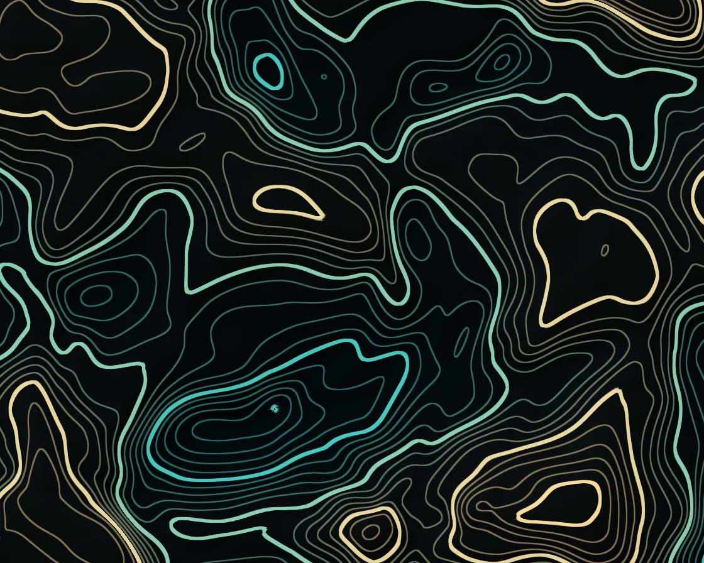

Topographic contours
Topographic contours is a WebGL effect: isolines of morphing noise terrain, made pixel-exact with fwidth. One plain JavaScript file with no dependencies; add it with npx motion-library add topographic.

Open it live, tune it and copy the code
What is Topographic contours?
Contour lines of a slowly shifting landscape crowd on slopes and close into rings on peaks. The pointer raises a hill the contours ring around; press to sink a pit.
How does Topographic contours work?
Domain-warped noise gives the height; the distance to the nearest contour, divided by fwidth, is measured in pixels, so every line stays equally crisp on steep and gentle ground.
How do I add Topographic contours to my website?
- In your project folder, run
npx motion-library add topographic. It writesanimations/topographic.js. Needs Node 18 or newer. - Import it and call it with a container element that has a size:
import fx from './animations/topographic.js'; const stop = fx(document.querySelector('#hero')); - Call
stop()to clean up, for example when a component unmounts.
Every setting below is also a flag, so you can install it already tuned: npx motion-library add topographic --levels 48.
What settings can I tweak?
| Setting | Flag | Default | Range | Step |
|---|---|---|---|---|
| Contour levels | --levels | 22 | 6 to 48 | 1 |
| Terrain scale | --scale | 1.6 | 0.5 to 4 | 0.1 |
| Speed | --speed | 1 | 0 to 3 | 0.05 |
Specifications
- Renderer
- WebGL
- Category
- Generative & math
- Dependencies
- None
- File size
- 7.1 KB, unminified
- Interactive
- Yes: it responds to the pointer
- Reduced motion
- Respects prefers-reduced-motion
- Licence
- MIT-0: use it anywhere, no credit needed
Source code
// Topographic contours: a terrain made of fractal noise (with its domain gently warped by more noise, so ridges
// curl), slowly morphing. Only three octaves, so the slopes stay smooth enough to read as land. The height is multiplied by the number of levels and every pixel measures how far it is
// from the nearest whole number, divided by how fast the height changes across one pixel (fwidth). That turns the
// distance into pixels, so every contour line is the same crisp width on steep slopes and flat ones. Every fifth
// line is an index contour, drawn thicker and brighter, as on a survey map. A low hillshade sits underneath.
// The pointer (or an idle ghost) raises a hill in the height field and the contours close round it; press to sink a pit.
const PARAMS = { levels: 22, scale: 1.6, speed: 1 };
export default function (stage) {
const canvas = document.createElement('canvas');
canvas.style.cssText = 'position:absolute;inset:0;width:100%;height:100%;display:block';
stage.append(canvas);
const gl = canvas.getContext('webgl2', { antialias: false });
if (!gl) { stage.textContent = 'This needs WebGL2.'; return () => canvas.remove(); }
const reduce = matchMedia('(prefers-reduced-motion: reduce)').matches;
const vs = `#version 300 es
in vec2 p; void main() { gl_Position = vec4(p, 0, 1); }`;
const fs = `#version 300 es
precision highp float; out vec4 o;
uniform vec2 R, M; uniform float T, D, MA, S, u_levels, u_scale, u_speed;
float hash(vec2 p) { return fract(sin(dot(p, vec2(127.1, 311.7))) * 43758.5453); }
vec2 hash2(vec2 p) { return fract(sin(vec2(dot(p, vec2(127.1, 311.7)), dot(p, vec2(269.5, 183.3)))) * 43758.5453); }
float noise(vec2 p) { vec2 i = floor(p), f = fract(p); f = f * f * (3. - 2. * f);
return mix(mix(hash(i), hash(i + vec2(1, 0)), f.x), mix(hash(i + vec2(0, 1)), hash(i + 1.), f.x), f.y); }
float fbm(vec2 p) { float s = 0., a = .5; mat2 m = mat2(1.6, 1.2, -1.2, 1.6); for (int i = 0; i < 5; i++) { s += a * noise(p); p = m * p; a *= .5; } return s; }
float fbm3(vec2 p) { float s = 0., a = .55; mat2 m = mat2(1.6, 1.2, -1.2, 1.6); for (int i = 0; i < 3; i++) { s += a * noise(p); p = m * p; a *= .45; } return s; }
float terrain(vec2 q) {
vec2 w = vec2(fbm3(q * .7 + vec2(T * .021, -T * .013)), fbm3(q * .7 + vec2(5.2, 1.3) - T * .017));
return fbm3(q + 1.3 * w + vec2(0, T * .01)) * 1.15;
}
void main() {
vec2 p = (gl_FragCoord.xy - .5 * R) / R.y;
vec2 q = p * u_scale * 2.;
vec2 dm = p - M;
float h = terrain(q) + S * (.28 + .14 * MA) * exp(-dot(dm, dm) * 20.); // the pointer's hill (S < 0: a pit)
float v = h * u_levels;
float fw = max(fwidth(v), 1e-4);
float dl = abs(fract(v - .5) - .5) / fw; // pixels to the nearest contour
float lvl = floor(v + .5);
bool idx = mod(lvl, 5.) == 0.;
float wpx = (idx ? 1.25 : .55) * D; // half-width in device pixels
float line = 1. - smoothstep(wpx - .6, wpx + .6, dl);
// a low hillshade from the height's screen-space slope
vec2 gr = vec2(dFdx(h), dFdy(h)) * R.y;
float shade = clamp(.5 + dot(normalize(vec3(-gr * .8, 1.)), normalize(vec3(-.6, .7, .5))) * .5, 0., 1.);
float e = smoothstep(.2, .8, h); // elevation, 0 low to 1 high
vec3 bg = mix(vec3(.012, .03, .04), vec3(.03, .045, .05), e) * (.6 + .7 * shade);
vec3 lc = mix(vec3(.25, .75, .7), vec3(.95, .8, .55), e);
vec3 col = bg + lc * line * (idx ? 1. : .5);
o = vec4(col, 1);
}`;
const sh = (t, s) => { const x = gl.createShader(t); gl.shaderSource(x, s); gl.compileShader(x); if (!gl.getShaderParameter(x, gl.COMPILE_STATUS)) throw new Error(gl.getShaderInfoLog(x)); return x; };
const prog = gl.createProgram(); gl.attachShader(prog, sh(gl.VERTEX_SHADER, vs)); gl.attachShader(prog, sh(gl.FRAGMENT_SHADER, fs)); gl.bindAttribLocation(prog, 0, 'p'); gl.linkProgram(prog);
if (!gl.getProgramParameter(prog, gl.LINK_STATUS)) throw new Error(gl.getProgramInfoLog(prog));
gl.useProgram(prog);
gl.bindBuffer(gl.ARRAY_BUFFER, gl.createBuffer()); gl.bufferData(gl.ARRAY_BUFFER, new Float32Array([-1, -1, 3, -1, -1, 3]), gl.STATIC_DRAW);
gl.enableVertexAttribArray(0); gl.vertexAttribPointer(0, 2, gl.FLOAT, false, 0, 0);
const U = {}; ['R', 'M', 'T', 'D', 'MA', 'S', 'u_levels', 'u_scale', 'u_speed'].forEach(n => U[n] = gl.getUniformLocation(prog, n));
let dpr = 1;
const resize = () => { dpr = Math.min(devicePixelRatio, 2); canvas.width = (stage.clientWidth || 1) * dpr | 0; canvas.height = (stage.clientHeight || 1) * dpr | 0; gl.viewport(0, 0, canvas.width, canvas.height); };
const ro = new ResizeObserver(resize); ro.observe(stage); resize();
// the pointer, in shader space (units of stage height, origin at the centre, y up); an idle ghost takes over
// when nobody is pointing, so a hill keeps wandering over the map
const ghostX = (g, asp) => asp * 0.28 * Math.sin(g * 0.23 + 0.6) + 0.04 * Math.sin(g * 0.9);
const ghostY = g => 0.2 * Math.sin(g * 0.37 + 1.9);
let gt = reduce ? 1.5 : 0, asp0 = canvas.width / canvas.height, tx = ghostX(gt, asp0), ty = ghostY(gt), mx = tx, my = ty, ma = 0, lastMove = -1e9, press = false, sg = 1;
const toLocal = e => { const b = canvas.getBoundingClientRect(); return [(e.clientX - b.left - b.width / 2) / b.height, (b.height / 2 - (e.clientY - b.top)) / b.height]; };
const onMove = e => { [tx, ty] = toLocal(e); lastMove = performance.now(); };
const onLeave = () => { lastMove = -1e9; press = false; };
const onDown = e => { onMove(e); press = true; };
const onUp = () => { press = false; };
canvas.addEventListener('pointermove', onMove); canvas.addEventListener('pointerdown', onDown); canvas.addEventListener('pointerleave', onLeave);
canvas.addEventListener('pointerup', onUp); canvas.addEventListener('pointercancel', onUp);
let raf, t = 0, last = performance.now();
function frame(now) {
const dt = Math.min(0.05, (now - last) / 1000); last = now;
t += dt * PARAMS.speed * (reduce ? 0.05 : 1);
const live = now - lastMove < 2500, asp = canvas.width / canvas.height;
if (!reduce) gt += dt;
if (!live) { tx = ghostX(gt, asp); ty = ghostY(gt); }
const k = 1 - Math.exp(-dt * (live ? 14 : 3));
mx += (tx - mx) * k; my += (ty - my) * k; ma += ((live ? 1 : 0) - ma) * (1 - Math.exp(-dt * 4));
sg += ((press ? -1 : 1) - sg) * (1 - Math.exp(-dt * 6));
gl.uniform1f(U.S, sg);
gl.uniform2f(U.R, canvas.width, canvas.height); gl.uniform1f(U.T, t); gl.uniform1f(U.D, dpr);
gl.uniform2f(U.M, mx, my); gl.uniform1f(U.MA, ma);
gl.uniform1f(U.u_levels, PARAMS.levels);
gl.uniform1f(U.u_scale, PARAMS.scale);
gl.uniform1f(U.u_speed, PARAMS.speed);
gl.drawArrays(gl.TRIANGLES, 0, 3);
raf = requestAnimationFrame(frame);
}
raf = requestAnimationFrame(frame);
return () => { cancelAnimationFrame(raf); ro.disconnect(); canvas.removeEventListener('pointermove', onMove); canvas.removeEventListener('pointerdown', onDown); canvas.removeEventListener('pointerleave', onLeave); canvas.removeEventListener('pointerup', onUp); canvas.removeEventListener('pointercancel', onUp); gl.getExtension('WEBGL_lose_context')?.loseContext(); canvas.remove(); };
}